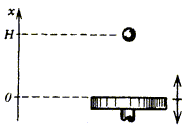
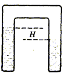
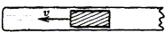

IYPT 1990 Problems
Problems for the 3rd IYPT 1990
1. Invent yourself — a physical photo contest
Submit to a contest the photographs of a rapidly occurring physical phenomenon. Explain in your commentaries the physical value of these photographs.
2—4. Ball and piston
A horizontal piston oscillates up and down. The coordinate of the piston’s surface is defined with an expression x=x0cosωt. At an arbitrary moment, a small ball is dropped without initial speed onto the piston from a height H.

2. Up to what altitude will the ball bounce after the first collision with the piston? For this case, consider the collision as absolutely elastic, and H>x0.
3. The system “forgets” the initial conditions after a big number of collisions. Estimate up to what maximum altitude a ball may bounce after many collisions. What is the average bounce altitude? Consider that the surfaces of the ball and of the piston are not damaged at collisions.
4. Let a ceiling be at a height H above the piston. In this case, stationary solutions are possible. Find some of them and research their stability. Consider H=1 m, H>>x0, g=10 m/s2 for numerical estimations. Consider the restoration coefficient of ball collisions with the piston and with the ceiling, as k=0.8.
5. Planet
What is the maximum possible size of a cube-shaped planet?
6. Evaporation-condensation
A П-shaped soldered glass tube contains some water.

If there is an initial difference of water levels H, then the water levels will become equal after some time. Estimate the rate of this equalization for a given H and T=const,
- if there is no air in the tube
- if there is some air in the tube, at normal atmospheric pressure.
7. Cylinder in a tube
A cylinder is moving towards the closed end in a long tube filled with water.

The inner diameter of the tube is D, diameter of the cylinder is d, the cylinder length is L, D-d=h, L>D, h<<D. How does the resistance force depend on the speed of cylinder? Compare the theoretical estimations with the experimental results.
8. Segner’s wheel
A Segner’s wheel rotates due to the reactive force of streams flowing out of the nozzles, when the wheel is placed into the water. Will it rotate backwards in a reverse regime, if the water is sucked into the nozzles, not flowing out of them? It is recommended to look through the book Surely You’re Joking, Mr. Feynman!.
9. Franklin’s wheel
Rotation of a little metal bar with pointed spearheads in a well-known “Franklin’s wheel experiment” is explained by the existence of “electric wind”. Explain why the wheel rotates if one places it between the plates of a parallel-plate capacitor and charges the capacitor with an electrostatic generator. If the Franklin’s wheel is replaced with a dielectric disk, will such a disk rotate between the plates of a parallel-plate capacitor charged with an electrostatic generator?
10. Electret
150 years ago, M. Faraday predicted electrets as electrostatic analogues to permanent magnets. Manufacture an electret and research its properties.
11. Color of a cloud
“Clouds in the skies above, heavenly wanderers,
Long strings of snowy pearls stretched over azure plains!
Exiles like I, you rush farther and farther on…”
M. Yu. Lermontov
Explain the observed colors of white clouds and rain bearing clouds.
12. Border of a cloud
An observed border of a cloud is often sharp. It is especially evident from onboard an airplane. Evaluate the “diffuseness” of the cloud’s border.
13. Cosmonauts cloud (a fantasy with physical sense)
A large number of cosmonauts form a “cosmonauts cloud” in the outer space. Initially each of them has a football with him. Starting from a certain moment, cosmonauts begin throwing these balls one to another (without losing them). Describe the evolution of the “cosmonauts cloud”. In order not to limit your imagination, we offer you to choose on your own the initial conditions, the rules of throwing the balls, and other parameters of the “cloud”. The only important aspects are that the choice of model should be logically validated; the conclusions should be supported with quantitative estimations; the number of described evolutions should not exceed two.
14. Fractal?
A grandmother is winding woolen thread into a spherical thread ball. How does the mass of the ball depend on its diameter?
15. Light in a tube
Look through a glass tube at a light (tube diameter is ca. 5 mm, length is ca. 25 cm.) Explain the origin of the observed circles.
16. Interference
Take two photo plates (9×12 cm), well-washed from emulsion. If they are tightly pressed (lapped) one to another, the interference bands can be observed in the reflected light. If the plates are laid on the table and the upper one is pressed in the middle part with a finger, the interference pattern looks like concentric circles. When the finger is removed, the circles “run away” from the centre. Carry out such an experiment and explain the observed phenomena. Evaluate theoretically how fast do the circles “run away” as the loading is removed.
17. Scientific Organization of Labor — SOL
You have to hammer 1989 similar nails (l=50 mm, d=2.5 mm) into a wooden bar. What hammer would you choose to perform this job quicker and better? (More specifically: what are the mass of the hammer and the length of its handle?)
- for a pine bar
- for an oak bar.